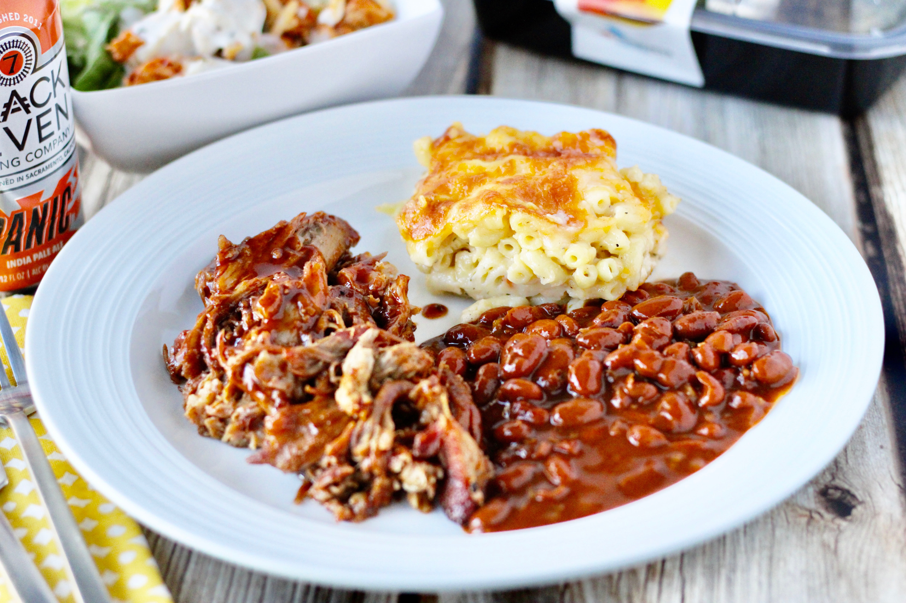

Pulled Pork

Desciption
This is a simple recipe to make delicous pulled pork. The prep time for
this is minimal and the results are mouth watering.
Ingredients
- Pork Butt
- Mustard
- Seasoning
- Apple Juice
Steps
- Slather the pork butt in mustard
- Use your seasoning of choice, and spread over the pork butt
- Heat smoker to 225 degrees and place pork butt fat side up on to grate
- Heat pork butt to 200 degrees (8-12 hours)
- Remove from smoker and wrap in tin foil until warm
- Shred meat adding apple juice and more seasoning to taste. (Apple juice makes the meat more moist if dry)
- Enjoy!